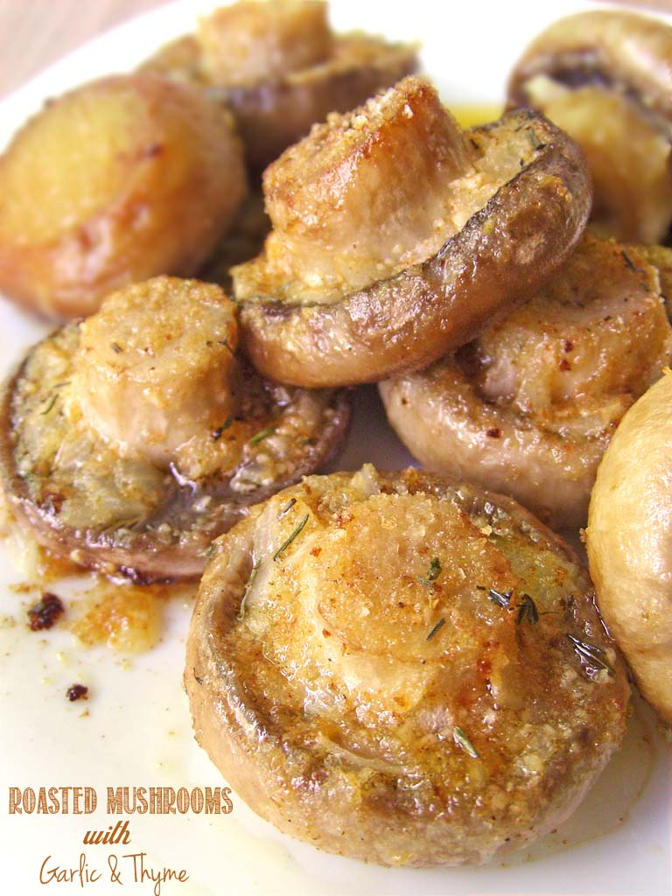

Roasted Mushrooms

Description:
No cap, these mushrooms are amazing! They're juicy with a strong herb-y, garlicky taste and a hint of tart sourness that accentuates the thyme flavor. The breadcrumbs add a nice crunchy texture to the soft, juicy mushroom. It's amazing!!
This recipe belongs to Cake's Cottage. I haven't tried any other recipes from this blog but I can't wait to try more recipes!!
Ingredients:
16 open cup mushrooms
3 tbsp olive oil
2 cloves garlic, chopped
3 tbsp unsalted butter, softened
2 tbsp fresh thyme, chopped
0.5 tsp garlic powder
5 tbsp fresh breadcrumbs
1.5 tbsp lemon juice
salt to taste
black pepper to taste
Steps:
- Preheat oven to 400F. Lightly fry the mushrooms, cap-side down for 2-3 minutes.
- Arrange the mushrooms in a 9x13 cooking dish, cap-side down.
- Mix butter, garlic, thyme, lemon juice, and seasoning.
- Spoon a little of the mixture on each mushroom then lightly press the breadcrumbs on top.
- Bake mushrooms in the oven for 15 minutes or until golden around the mushroom cap.